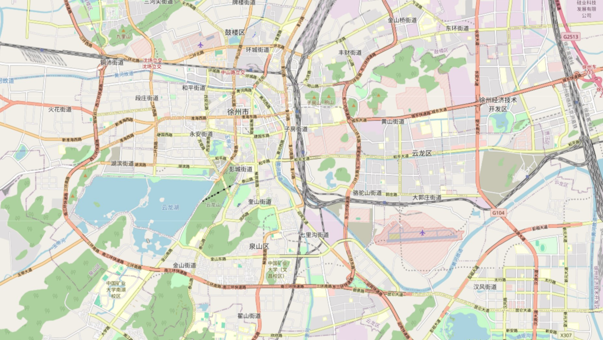
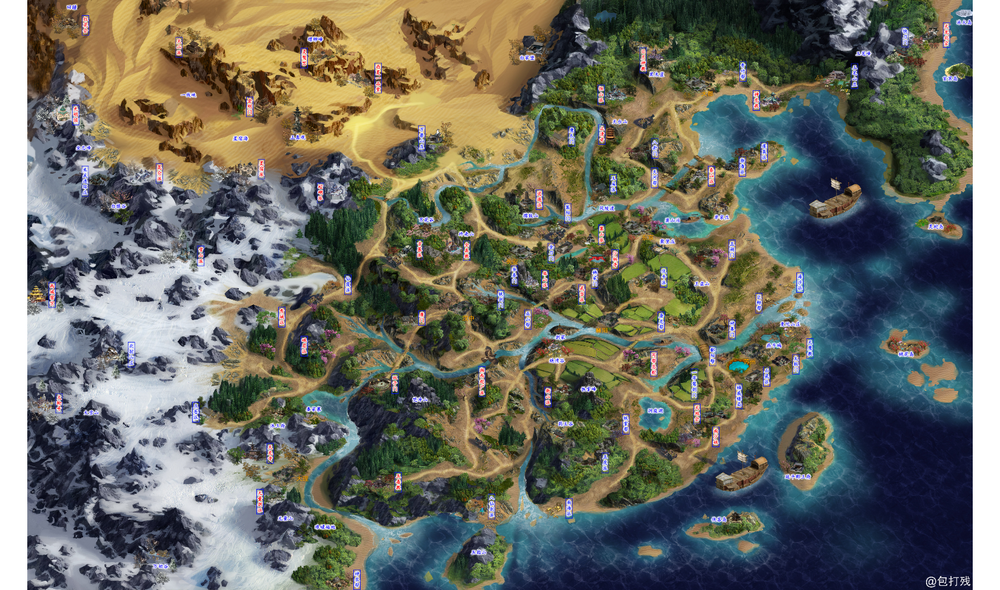

地图之美！
stay hungry, stay foolish!
地图之美
地图，是文明的诗篇，是时间的画卷。
它将浩瀚的疆域和无尽的海洋，浓缩于方寸之间，勾勒出地球的脉络和心跳。
每一条曲折的河流，每一座巍峨的山脉，都仿佛诉说着岁月的传奇和自然的壮丽。
地图上那无数的线条，是探险者的足迹，是梦想家的蓝图。
古老的制图者，用他们的智慧和胆识，将未知的世界描绘成精美的图案。
那些标注的城市与村庄，似乎在静静等待着远方的旅人，分享它们的故事与秘密。
在地图的广阔天地里，我们可以感受到一种奇妙的平衡与和谐。
不同的文化和历史，在这片无声的纸上交汇、融合。
地图不仅是导航的工具，更是人类探索与发现的象征。
它承载着我们的渴望与梦想，指引我们走向更远的未来。
无论是古老的羊皮纸地图，还是现代的数字卫星图，它们都拥有一种永恒的魅力。
它们让我们在静谧的时光中，仿佛穿越时空，领略世界的多姿多彩。
每当我们凝视地图，心中便会升腾起一种奇妙的感动，那是对未知世界的向往，对无限可能的追求。
地图，是一首无声的赞歌，赞美着地球的美丽与神秘。
它教会我们敬畏自然，珍惜家园，并以开阔的视野和无尽的勇气，去探索更广阔的天地。
······

山海图
红楼梦大观园

徐州市OSM地图

金庸武侠地图
唐三藏西天取经地图
黄山旅游导览图